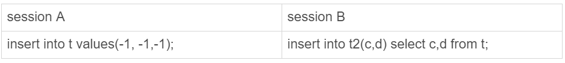
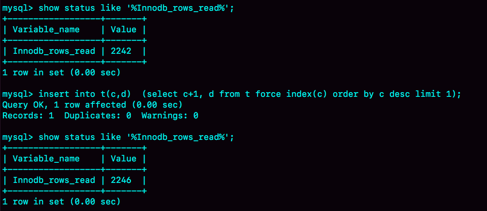

在上一篇文章中，我提到MySQL对自增主键锁做了优化，尽量在申请到自增id以后，就释放自增锁。
因此，insert语句是一个很轻量的操作。不过，这个结论对于“普通的insert语句”才有效。也就是说，还有些insert语句是属于“特殊情况”的，在执行过程中需要给其他资源加锁，或者无法在申请到自增id以后就立马释放自增锁。
那么，今天这篇文章，我们就一起来聊聊这个话题。
insert … select 语句
我们先从昨天的问题说起吧。表t和t2的表结构、初始化数据语句如下，今天的例子我们还是针对这两个表展开。
CREATE TABLE `t` (
`id` int(11) NOT NULL AUTO_INCREMENT,
`c` int(11) DEFAULT NULL,
`d` int(11) DEFAULT NULL,
PRIMARY KEY (`id`),
UNIQUE KEY `c` (`c`)
) ENGINE=InnoDB;
insert into t values(null, 1,1);
insert into t values(null, 2,2);
insert into t values(null, 3,3);
insert into t values(null, 4,4);
create table t2 like t
现在，我们一起来看看为什么在可重复读隔离级别下，binlog_format=statement时执行：
insert into t2(c,d) select c,d from t;
这个语句时，需要对表t的所有行和间隙加锁呢？
其实，这个问题我们需要考虑的还是日志和数据的一致性。我们看下这个执行序列：

实际的执行效果是，如果session B先执行，由于这个语句对表t主键索引加了(-∞,1]这个next-key lock，会在语句执行完成后，才允许session A的insert语句执行。
但如果没有锁的话，就可能出现session B的insert语句先执行，但是后写入binlog的情况。于是，在binlog_format=statement的情况下，binlog里面就记录了这样的语句序列：
insert into t values(-1,-1,-1);
insert into t2(c,d) select c,d from t;
这个语句到了备库执行，就会把id=-1这一行也写到表t2中，出现主备不一致。
insert 循环写入
当然了，执行insert … select 的时候，对目标表也不是锁全表，而是只锁住需要访问的资源。
如果现在有这么一个需求：要往表t2中插入一行数据，这一行的c值是表t中c值的最大值加1。
此时，我们可以这么写这条SQL语句 ：
insert into t2(c,d) (select c+1, d from t force index(c) order by c desc limit 1);
这个语句的加锁范围，就是表t索引c上的(3,4]和(4,supremum]这两个next-key lock，以及主键索引上id=4这一行。
它的执行流程也比较简单，从表t中按照索引c倒序，扫描第一行，拿到结果写入到表t2中。
因此整条语句的扫描行数是1。
这个语句执行的慢查询日志（slow log），如下图所示：

通过这个慢查询日志，我们看到Rows_examined=1，正好验证了执行这条语句的扫描行数为1。
那么，如果我们是要把这样的一行数据插入到表t中的话：
insert into t(c,d) (select c+1, d from t force index(c) order by c desc limit 1);
语句的执行流程是怎样的？扫描行数又是多少呢？
这时候，我们再看慢查询日志就会发现不对了。

可以看到，这时候的Rows_examined的值是5。
我在前面的文章中提到过，希望你都能够学会用explain的结果来“脑补”整条语句的执行过程。今天，我们就来一起试试。
如图4所示就是这条语句的explain结果。

从Extra字段可以看到“Using temporary”字样，表示这个语句用到了临时表。也就是说，执行过程中，需要把表t的内容读出来，写入临时表。
图中rows显示的是1，我们不妨先对这个语句的执行流程做一个猜测：如果说是把子查询的结果读出来（扫描1行），写入临时表，然后再从临时表读出来（扫描1行），写回表t中。那么，这个语句的扫描行数就应该是2，而不是5。
所以，这个猜测不对。实际上，Explain结果里的rows=1是因为受到了limit 1 的影响。
从另一个角度考虑的话，我们可以看看InnoDB扫描了多少行。如图5所示，是在执行这个语句前后查看Innodb_rows_read的结果。

可以看到，这个语句执行前后，Innodb_rows_read的值增加了4。因为默认临时表是使用Memory引擎的，所以这4行查的都是表t，也就是说对表t做了全表扫描。
这样，我们就把整个执行过程理清楚了：
- 创建临时表，表里有两个字段c和d。
- 按照索引c扫描表t，依次取c=4、3、2、1，然后回表，读到c和d的值写入临时表。这时，Rows_examined=4。
- 由于语义里面有limit 1，所以只取了临时表的第一行，再插入到表t中。这时，Rows_examined的值加1，变成了5。
也就是说，这个语句会导致在表t上做全表扫描，并且会给索引c上的所有间隙都加上共享的next-key lock。所以，这个语句执行期间，其他事务不能在这个表上插入数据。
至于这个语句的执行为什么需要临时表，原因是这类一边遍历数据，一边更新数据的情况，如果读出来的数据直接写回原表，就可能在遍历过程中，读到刚刚插入的记录，新插入的记录如果参与计算逻辑，就跟语义不符。
由于实现上这个语句没有在子查询中就直接使用limit 1，从而导致了这个语句的执行需要遍历整个表t。它的优化方法也比较简单，就是用前面介绍的方法，先insert into到临时表temp_t，这样就只需要扫描一行；然后再从表temp_t里面取出这行数据插入表t1。
当然，由于这个语句涉及的数据量很小，你可以考虑使用内存临时表来做这个优化。使用内存临时表优化时，语句序列的写法如下：
create temporary table temp_t(c int,d int) engine=memory;
insert into temp_t (select c+1, d from t force index(c) order by c desc limit 1);
insert into t select * from temp_t;
drop table temp_t;
insert 唯一键冲突
前面的两个例子是使用insert … select的情况，接下来我要介绍的这个例子就是最常见的insert语句出现唯一键冲突的情况。
对于有唯一键的表，插入数据时出现唯一键冲突也是常见的情况了。我先给你举一个简单的唯一键冲突的例子。

这个例子也是在可重复读（repeatable read）隔离级别下执行的。可以看到，session B要执行的insert语句进入了锁等待状态。
也就是说，session A执行的insert语句，发生唯一键冲突的时候，并不只是简单地报错返回，还在冲突的索引上加了锁。我们前面说过，一个next-key lock就是由它右边界的值定义的。这时候，session A持有索引c上的(5,10]共享next-key lock（读锁）。
至于为什么要加这个读锁，其实我也没有找到合理的解释。从作用上来看，这样做可以避免这一行被别的事务删掉。
有同学在前面文章的评论区问到，在有多个唯一索引的表中并发插入数据时，会出现死锁。但是，由于他没有提供复现方法或者现场，我也无法做分析。所以，我建议你在评论区发问题的时候，尽量同时附上复现方法，或者现场信息，这样我才好和你一起分析问题。
这里，我就先和你分享一个经典的死锁场景，如果你还遇到过其他唯一键冲突导致的死锁场景，也欢迎给我留言。

在session A执行rollback语句回滚的时候，session C几乎同时发现死锁并返回。
这个死锁产生的逻辑是这样的：
- 在T2时刻，session B要执行相同的insert语句，发现了唯一键冲突，加上读锁；同样地，session C也在索引c上，c=5这一个记录上，加了读锁。
- T3时刻，session A回滚。这时候，session B和session C都试图继续执行插入操作，都要加上写锁。两个session都要等待对方的行锁，所以就出现了死锁。
这个流程的状态变化图如下所示。

insert into … on duplicate key update
上面这个例子是主键冲突后直接报错，如果是改写成
insert into t values(11,10,10) on duplicate key update d=100;
的话，就会给索引c上(5,10] 加一个排他的next-key lock（写锁）。
insert into … on duplicate key update 这个语义的逻辑是，插入一行数据，如果碰到唯一键约束，就执行后面的更新语句。
注意，如果有多个列违反了唯一性约束，就会按照索引的顺序，修改跟第一个索引冲突的行。
现在表t里面已经有了(1,1,1)和(2,2,2)这两行，我们再来看看下面这个语句执行的效果：

可以看到，主键id是先判断的，MySQL认为这个语句跟id=2这一行冲突，所以修改的是id=2的行。
需要注意的是，执行这条语句的affected rows返回的是2，很容易造成误解。实际上，真正更新的只有一行，只是在代码实现上，insert和update都认为自己成功了，update计数加了1， insert计数也加了1。
小结
今天这篇文章，我和你介绍了几种特殊情况下的insert语句。
insert … select 是很常见的在两个表之间拷贝数据的方法。你需要注意，在可重复读隔离级别下，这个语句会给select的表里扫描到的记录和间隙加读锁。
而如果insert和select的对象是同一个表，则有可能会造成循环写入。这种情况下，我们需要引入用户临时表来做优化。
insert 语句如果出现唯一键冲突，会在冲突的唯一值上加共享的next-key lock(S锁)。因此，碰到由于唯一键约束导致报错后，要尽快提交或回滚事务，避免加锁时间过长。
最后，我给你留一个问题吧。
你平时在两个表之间拷贝数据用的是什么方法，有什么注意事项吗？在你的应用场景里，这个方法，相较于其他方法的优势是什么呢？
你可以把你的经验和分析写在评论区，我会在下一篇文章的末尾选取有趣的评论来和你一起分析。感谢你的收听，也欢迎你把这篇文章分享给更多的朋友一起阅读。
上期问题时间
我们已经在文章中回答了上期问题。
有同学提到，如果在insert … select 执行期间有其他线程操作原表，会导致逻辑错误。其实，这是不会的，如果不加锁，就是快照读。
一条语句执行期间，它的一致性视图是不会修改的，所以即使有其他事务修改了原表的数据，也不会影响这条语句看到的数据。
评论区留言点赞板：
@长杰 同学回答得非常准确。